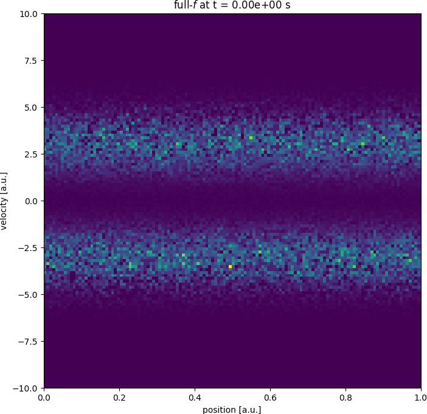
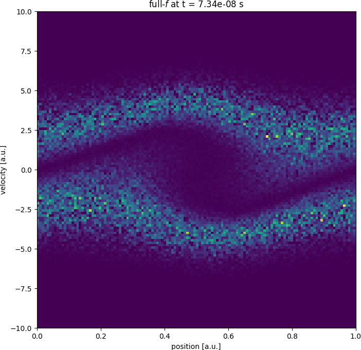
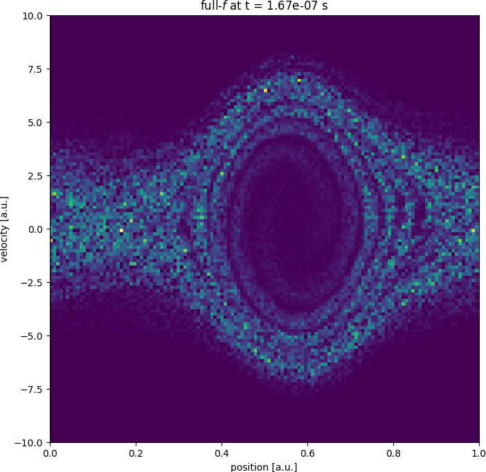
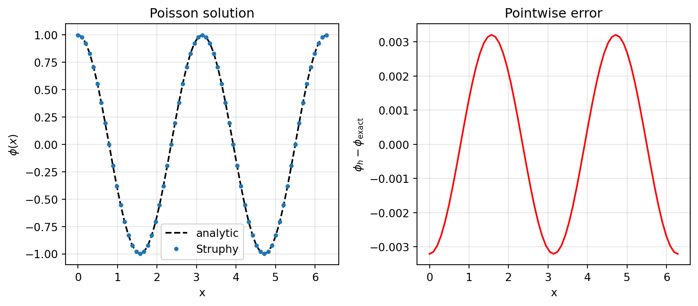
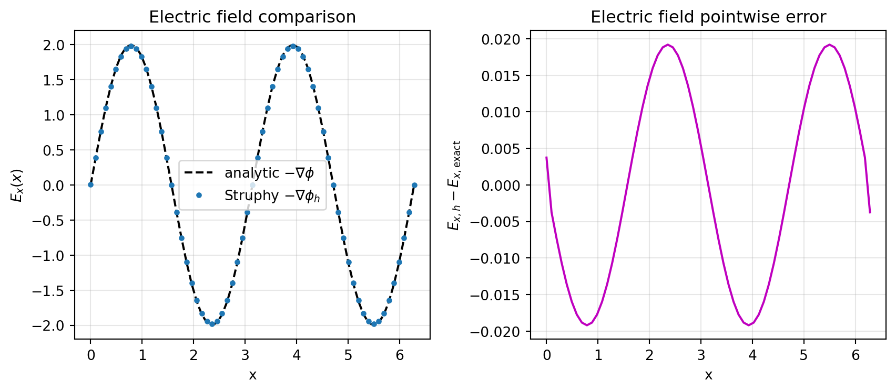
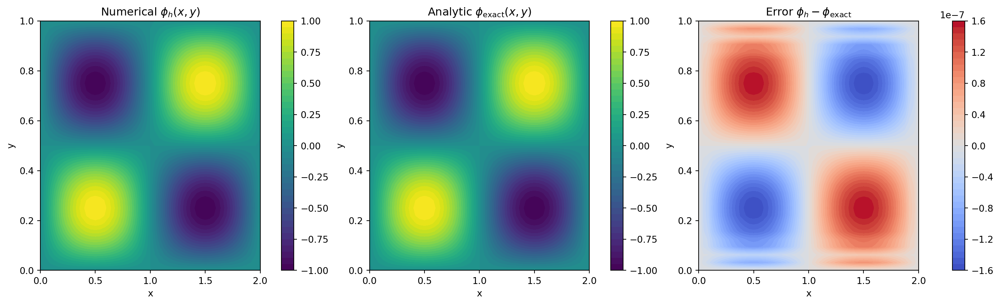
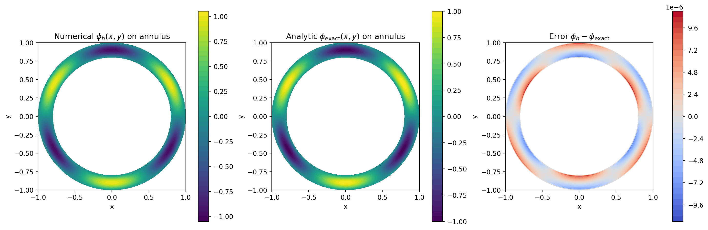

Struphy 3.1.0
Copyright 2019-2026 (c) Struphy dev team | Max Planck Institute for Plasma Physics
MIT licenseStruphy 3.1
Structure-Preserving
Hybrid Code
Plasma Models in Python
Stefan Possanner, group for Kinetic-Fluid Hybrid Models
NMPP retreat 2026 - Ammersee
Struphy is …
… an open-source Python package for solving partial differential equations (PDEs), primarily designed for plasma physics — though not limited to it.
- 💯% Python — Write models in clean, readable Python.
- 💥 Pyccel-powered kernels — High-performance Fortran code generated via Pyccel.
- 💻 Simple API — Run complex plasma simulations with minimal boilerplate.
- 🌐 Open-source & community-driven — Built for collaboration and accessibility.
Numerical methods
Particle-in-cell (PIC) method for kinetic models:
\[ f(t, x, v) = \sum_k w_k\, \delta(x - x_k(t))\, \delta(v - v_k(t)) \]
Finite element exterior calculus (FEEC) for fluid/field variables (via Psydac):
\[ \mathbf E(t, x) = \sum_i e_i(t)\, \mathbf \Lambda^1_i(x)\,, \qquad \mathbf B(t, x) = \sum_i b_i(t)\, \mathbf \Lambda^2_i(x) \]
Smoothed Particle Hydrodynamics (SPH) for fluid models:
\[ n(t, x) = \sum_k w_k\, W(x - x_k(t))\,,\qquad \mathbf u(t, x) = \sum_k \frac{w_k}{n(t, x_k(t))}\, \mathbf v_k(t)\, W(x - x_k(t)) \]
Struphy provides MPI/OpenMP data structures for these methods (GPU via cuda-python in the second half of 2026 - ACH project 6 months).
Under consideration: Hermite polynomials for velocity discretization (C. Negulescu)
Purpose of Struphy
- Provide a common Python API for researchers working on plasma physics PDEs
(such a thing exists for quantum physics, check out QuTiP).
- Care about maintainable code, avoid “technical debt” in research software
- Instead of losing research code, provide a framework for its preservation and reuse.
- Enable computational plasma research for a wider audience, including students and researchers that are not experts in programming.
Current team
Amin Raissi (PhD student with Omar Maj): SPH discretization of viscous Euler equations
Lorenzo Mazzi (Master student with Omar Maj): high frequency decomposition in Euler-Maxwell equations
Emile Grivet (4 month intership from Paris-Saclay): Benchmarking ITG turbulence with drift-kinetic equations in Struphy
David Székedi (internship from TU delft, remote): saddle point problem for quasi-neutral two-fluid equations
Max Lindqvist (ACH): Maintainer
Getting the code
Installation Options
- Install on bare metal (Linux/macOS)
- From PyPI (recommended)
- From source (for development)
- Use Docker (cross-platform)
- Run tutorials on Binder (cloud-based)
Install on bare metal (Linux/macOS)
- From source (for development):
Use Docker (cross-platform)
- Pull the latest image from Docker Hub and run it:
Run tutorials on Binder (cloud-based)
Run examples
Visit the repo for example parameter files:
Easy to launch and post-process examples:



Getting started
Check version in CLI
usage: struphy [-h] [-v] [-s] [--fluid] [--kinetic] [--hybrid] COMMAND ...
Struphy: STRUcture-Preserving HYbrid code for plasma physics.
options:
-h, --help show this help message and exit
-v, --version show program's version number and exit
-s, --short-help display short help
--fluid display available fluid models
--kinetic display available kinetic models
--hybrid display available hybrid models
available commands:
compile compile computational kernels (including psydac)
params create default parameter file for a model, or show model's options
profile profile finished runs
test run tests
format format source files
lint lint and analyze source files
Type "struphy COMMAND --help" for more information on a command.
For more help on how to use Struphy, see https://struphy-hub.github.io/struphy/Import model
Maxwell's equations in vacuum for electromagnetic field evolution.
To see detailed information on the model, run the following methods:
Maxwell.pde()
Maxwell.normalization()
Maxwell.scalar_quantities()
Maxwell.discretization()
Maxwell.long_description()
Maxwell.examples()
Maxwell.use_cases()
Maxwell.cannot_be_used_for()Discretization (Propagators called in sequence):
1. propagators_fields.Maxwell:
FEEC discretization of the following equations:
find 𝐄 ∈ H(curl) and 𝐁 ∈ H(div) such that
| ∫Ω ∂𝐄∂t · 𝐅 d 𝐱 - ∫Ω 𝐁 · ∇ × 𝐅 d 𝐱 | =0 , ∀ 𝐅 ∈ H(curl) |
| ∂𝐁∂t + ∇×𝐄 | =0 . |
Time discretization:
- implicit: Crank-Nicolson (implicit mid-point)
- explicit: explicit RK methods from ButcherTableau
System size reduction via struphy.linear_algebra.schur_solver.SchurSolver.
Run a Simulation
Post-process the simulation:
Run more verbosely
Starting simulation run for model Maxwell ...
PROPAGATOR OPTIONS:
Options for propagator 'Maxwell':
algo: implicit
solver: pcg
precond: MassMatrixPreconditioner
solver_params: SolverParameters(tol=1e-08, maxiter=3000, info=False, verbose=False, recycle=True)
butcher: None
INITIAL CONDITIONS:
Variable 'e_field' of species 'EMFields' - no background.
Variable 'e_field' of species 'EMFields' - no perturbation.
Variable 'b_field' of species 'EMFields' - no background.
Variable 'b_field' of species 'EMFields' - no perturbation.
Allocating simulation data ...
WARNING: Class "BasisProjectionOperators" called with degree=(1, 1, 1) (interpolation of piece-wise constants should be avoided).
Allocated SplineFuntion 'e_field' in space 'Hcurl'.
Allocated SplineFuntion 'b_field' in space 'Hdiv'.
Rank 0: executing run() for model Maxwell ...
INITIAL SCALAR QUANTITIES:
electric_energy: 0.00e+00
magnetic_energy: 0.00e+00
total_energy: 0.00e+00
START TIME STEPPING WITH 'LieTrotter' SPLITTING:
time step: 1/3
normalized time: 1.00e-02 / 3.00e-02
physical time [s]: 3.34e-11 / 1.00e-10
wall clock time [s]: 0.2221
last step duration [s]: 0.0098
electric_energy: 0.00e+00
magnetic_energy: 0.00e+00
total_energy: 0.00e+00
time step: 2/3
normalized time: 2.00e-02 / 3.00e-02
physical time [s]: 6.67e-11 / 1.00e-10
wall clock time [s]: 0.2467
last step duration [s]: 0.0102
electric_energy: 0.00e+00
magnetic_energy: 0.00e+00
total_energy: 0.00e+00
time step: 3/3
normalized time: 3.00e-02 / 3.00e-02
physical time [s]: 1.00e-10 / 1.00e-10
wall clock time [s]: 0.2637
last step duration [s]: 0.0092
electric_energy: 0.00e+00
magnetic_energy: 0.00e+00
total_energy: 0.00e+00
Time steps done: 3
wall-clock time of simulation [sec]: 0.27837443351745605
Struphy run finished.Post-process the simulation:
Post-processing path /home/IPP-AD/spossann/git_repos/2026_NMPP_retreat/sim_1
Reading hdf5 data of following species:
em_fields:
b_field: <HDF5 group "/feec/em_fields/b_field" (3 members)>
e_field: <HDF5 group "/feec/em_fields/e_field" (3 members)>
Allocated SplineFuntion 'b_field' in space 'Hdiv'.
Allocated SplineFuntion 'e_field' in space 'Hcurl'.
Allocated SplineFuntion 'b_field' in space 'Hdiv'.
Allocated SplineFuntion 'e_field' in space 'Hcurl'.
Allocated SplineFuntion 'b_field' in space 'Hdiv'.
Allocated SplineFuntion 'e_field' in space 'Hcurl'.
Allocated SplineFuntion 'b_field' in space 'Hdiv'.
Allocated SplineFuntion 'e_field' in space 'Hcurl'.
0%| | 0/2 [00:00<?, ?it/s]100%|██████████| 2/2 [00:00<00:00, 257.67it/s]
Creation of Struphy Fields done.
Evaluating fields ...
0%| | 0/4 [00:00<?, ?it/s]100%|██████████| 4/4 [00:00<00:00, 419.24it/s]
Creating vtk in /home/IPP-AD/spossann/git_repos/2026_NMPP_retreat/sim_1/post_processing/fields_data ...
0%| | 0/4 [00:00<?, ?it/s]100%|██████████| 4/4 [00:00<00:00, 610.30it/s]
No kinetic data found in hdf5 file, skipping post-processing of kinetic data.Load plotting data
Loading post-processed plotting data:
Data path: /home/IPP-AD/spossann/git_repos/2026_NMPP_retreat/sim_1/post_processing
Files in /home/IPP-AD/spossann/git_repos/2026_NMPP_retreat/sim_1/post_processing/fields_data/em_fields: ['e_field_log.bin', 'b_field_log.bin']
The following data has been loaded:
grids:
self.t_grid.shape =(4,)
self.grids_log[0].shape =(25,)
self.grids_log[1].shape =(11,)
self.grids_log[2].shape =(2,)
self.grids_phy[0].shape =(25, 11, 2)
self.grids_phy[1].shape =(25, 11, 2)
self.grids_phy[2].shape =(25, 11, 2)
self.spline_values:
em_fields
e_field_log
b_field_log
self.orbits:
self.f:
self.n_sph:
Poisson tutorial (written by copilot)
Solving 1D Poisson with periodic boundary conditions in Struphy
This tutorial shows how to solve a manufactured 1D Poisson problem with the Poisson model.
We use a periodic domain \(x \in [0, L)\) and choose an analytic solution
\[ \phi_\mathrm{exact}(x) = \cos(kx), \]
so the source for the stabilized Poisson problem
\[ -\phi'' + \varepsilon\phi = \rho \]
is
\[ \rho(x) = (k^2 + \varepsilon)\cos(kx). \]
Then we run a Struphy Simulation, compare numerical and exact solutions, and compute the max-norm error.
# Manufactured periodic test case in 1D (aligned with verification test pattern)
Lx = 2.0 * np.pi
mode = 2
k = mode * 2.0 * np.pi / Lx
# Tiny stabilization makes the periodic problem uniquely solvable
stab_eps = 1e-8
# Build the source through the model variable as in test_verif_Poisson.py
model = Poisson()
options = model.propagators.poisson.Options(
rho=model.em_fields.source,
stab_eps=stab_eps,
)
model.propagators.poisson.options = options
source_amp = k**2 + stab_eps
model.em_fields.source.add_perturbation(
perturbations.ModesCos(ls=(mode,), amps=(source_amp,))
)
phi_exact = lambda e1, e2, e3: np.cos(k * e1)Poisson.Options controls the elliptic solve. In this example we only set:
rho: the manufactured source term.stab_eps: a tiny stabilization to remove the constant null-space in the periodic case.
All other option fields are left at their defaults (solver choice, preconditioner, tolerances, etc.).
Starting simulation run for model Poisson ...
Struphy run finished.
0%| | 0/2 [00:00<?, ?it/s]100%|██████████| 2/2 [00:00<00:00, 753.56it/s]
0%| | 0/2 [00:00<?, ?it/s]100%|██████████| 2/2 [00:00<00:00, 1437.14it/s]
0%| | 0/2 [00:00<?, ?it/s]100%|██████████| 2/2 [00:00<00:00, 1722.86it/s]
Loading post-processed plotting data:
Data path: /home/IPP-AD/spossann/git_repos/2026_NMPP_retreat/sim_1/post_processing
Files in /home/IPP-AD/spossann/git_repos/2026_NMPP_retreat/sim_1/post_processing/fields_data/em_fields: ['phi_log.bin', 'source_log.bin']
The following data has been loaded:
grids:
self.t_grid.shape =(2,)
self.grids_log[0].shape =(65,)
self.grids_log[1].shape =(2,)
self.grids_log[2].shape =(2,)
self.grids_phy[0].shape =(65, 2, 2)
self.grids_phy[1].shape =(65, 2, 2)
self.grids_phy[2].shape =(65, 2, 2)
self.spline_values:
em_fields
phi_log
source_log
self.orbits:
self.f:
self.n_sph:
# Extract 1D line data and compare to analytic solution
x = sim.grids_phy[0][:, 0, 0]
t_last = max(sim.spline_values.em_fields.phi_log.data.keys())
phi_num = sim.spline_values.em_fields.phi_log.data[t_last][0][:, 0, 0]
phi_ref = phi_exact(x, 0.0, 0.0)
err = phi_num - phi_ref
err_max = np.max(np.abs(err))max-norm error ||phi_h - phi_exact||_inf = 3.207e-03
max-norm error ||E_h - E_exact||_inf = 1.920e-02

Poisson tutorial (contd.)
2D Manufactured Test on a Rectangle
We now solve a 2D manufactured Poisson problem on a rectangle with different side lengths:
\[ (x,y) \in [0,L_x] \times [0,L_y], \qquad L_x \neq L_y. \]
Choose
\[ \phi_\mathrm{exact}(x,y) = \sin\left(\frac{2\pi x}{L_x}\right)\sin\left(\frac{2\pi y}{L_y}\right), \]
which satisfies homogeneous Dirichlet conditions on all rectangle boundaries. For
\[ -\Delta\phi + \varepsilon\phi = \rho, \]
the manufactured source is
\[ \rho(x,y) = \left[\left(\frac{2\pi}{L_x}\right)^2 + \left(\frac{2\pi}{L_y}\right)^2 + \varepsilon\right] \phi_\mathrm{exact}(x,y). \]
To stay consistent with Struphy’s source handling, we build this source through a model perturbation.
# 2D manufactured Poisson setup and solve
Lx2 = 2.0
Ly2 = 1.0
eps2 = 1e-8
kx2 = 2.0 * np.pi / Lx2
ky2 = 2.0 * np.pi / Ly2
phi2_exact = lambda e1, e2, e3: np.sin(kx2 * e1) * np.sin(ky2 * e2)
model2 = Poisson()
model2.propagators.poisson.options = model2.propagators.poisson.Options(
rho=model2.em_fields.source,
stab_eps=eps2,
)
source_amp2 = kx2**2 + ky2**2 + eps2
model2.em_fields.source.add_perturbation(
perturbations.ModesSinSin(ls=(1,), ms=(1,), amps=(source_amp2,))
)
domain2 = domains.Cuboid(l1=0.0, r1=Lx2, l2=0.0, r2=Ly2)
grid2 = grids.TensorProductGrid(num_elements=(48, 32, 1))
derham_opts2 = DerhamOptions(
degree=(3, 3, 1),
bcs=(("dirichlet", "dirichlet"), ("dirichlet", "dirichlet"), None),
)
sim2 = Simulation(
model=model2,
domain=domain2,
grid=grid2,
derham_opts=derham_opts2,
)
Starting simulation run for model Poisson ...
Struphy run finished.
0%| | 0/2 [00:00<?, ?it/s]100%|██████████| 2/2 [00:00<00:00, 534.78it/s]
0%| | 0/2 [00:00<?, ?it/s]100%|██████████| 2/2 [00:00<00:00, 305.13it/s]
0%| | 0/2 [00:00<?, ?it/s]100%|██████████| 2/2 [00:00<00:00, 206.84it/s]# 2D diagnostics and plots
t2_last = max(sim2.spline_values.em_fields.phi_log.data.keys())
X = sim2.grids_phy[0][:, :, 0]
Y = sim2.grids_phy[1][:, :, 0]
phi2_num = sim2.spline_values.em_fields.phi_log.data[t2_last][0][:, :, 0]
phi2_ref = phi2_exact(X, Y, 0.0)
err2 = phi2_num - phi2_ref
err2_max = np.max(np.abs(err2))2D max-norm error ||phi_h - phi_exact||_inf = 1.589e-07
Poisson tutorial (contd.)
2D Manufactured Test on a Thin Annulus (HollowCylinder)
As a second 2D geometry test, we solve Poisson on a disc-shaped domain with a small hole, i.e. a thin annulus.
We use the physical manufactured solution
\[ \phi_\mathrm{exact}(r,\theta)=\sin\!\left(\pi\frac{r-a_1}{a_2-a_1}\right)\sin(m\theta), \]
with \(r=\sqrt{x^2+y^2}\) and \(\theta=\mathrm{atan2}(y,x)\). This vanishes at \(r=a_1\) and \(r=a_2\), so we impose homogeneous Dirichlet conditions in the radial direction.
For
\[ -\Delta\phi + \varepsilon\phi = \rho, \]
the source \(\rho\) is computed analytically in polar coordinates and injected as a physical-space perturbation.
Below, all plots are shown in physical coordinates \((x,y)\) only.
# HollowCylinder manufactured annulus test (physical-space definition)
a1 = 0.8
a2 = 1.0
Lz3 = 1.0
m3 = 3
eps3 = 1e-8
w3 = a2 - a1
alpha3 = np.pi / w3
def phi3_exact(x, y, z):
r = np.sqrt(x**2 + y**2)
theta = np.arctan2(y, x)
s = alpha3 * (r - a1)
return np.sin(s) * np.sin(m3 * theta)
def rho3_exact(x, y, z):
r = np.sqrt(x**2 + y**2)
theta = np.arctan2(y, x)
s = alpha3 * (r - a1)
sin_s = np.sin(s)
cos_s = np.cos(s)
sin_mt = np.sin(m3 * theta)
# -Delta(phi) + eps*phi for phi(r,theta)=sin(s)sin(m theta)
term = (alpha3**2) * sin_s - (alpha3 / r) * cos_s + (m3**2 / r**2) * sin_s + eps3 * sin_s
return term * sin_mt
model3 = Poisson()
model3.propagators.poisson.options = model3.propagators.poisson.Options(
rho=model3.em_fields.source,
stab_eps=eps3,
)
model3.em_fields.source.add_perturbation(
GenericPerturbation(rho3_exact, given_in_basis="physical")
)
domain3 = domains.HollowCylinder(a1=a1, a2=a2, Lz=Lz3)
grid3 = grids.TensorProductGrid(num_elements=(36, 96, 1))
derham_opts3 = DerhamOptions(
degree=(3, 3, 1),
bcs=(("dirichlet", "dirichlet"), None, None),
)
sim3 = Simulation(
model=model3,
domain=domain3,
grid=grid3,
derham_opts=derham_opts3,
)
sim3.run(one_time_step=True)
sim3.pproc()
sim3.load_plotting_data()
Starting simulation run for model Poisson ...
Struphy run finished.
0%| | 0/2 [00:00<?, ?it/s]100%|██████████| 2/2 [00:00<00:00, 1006.43it/s]
0%| | 0/2 [00:00<?, ?it/s]100%|██████████| 2/2 [00:00<00:00, 115.67it/s]
0%| | 0/2 [00:00<?, ?it/s]100%|██████████| 2/2 [00:00<00:00, 78.55it/s]# Annulus diagnostics and plots in physical coordinates only
t3_last = max(sim3.spline_values.em_fields.phi_log.data.keys())
X3 = sim3.grids_phy[0][:, :, 0]
Y3 = sim3.grids_phy[1][:, :, 0]
phi3_num = sim3.spline_values.em_fields.phi_log.data[t3_last][0][:, :, 0]
phi3_ref = phi3_exact(X3, Y3, 0.0)
err3 = phi3_num - phi3_ref
err3_max = np.max(np.abs(err3))Annulus max-norm error ||phi_h - phi_exact||_inf = 1.101e-05
Building models - the Lego system
Vlasov
PDEs solved by model:
Vlasov equation:
∂f∂t + 𝐯 · ∇ f + ( 𝐯 × 𝐁₀ ) · ∂f∂𝐯 = 0
Discretization (Propagators called in sequence):
1. propagators_markers.PushVxB:
For each marker p, solves
where ε = 1/(Ω̂c t̂) is a constant scaling factor, and for rotation vector 𝐁 and optional, additional fixed rotation vector 𝐁add, both given as a 2-form:
Available algorithms:
analyticimplicit.
2. propagators_markers.PushEta:
For each marker p, solves
for constant 𝐯ₚ in logical space given by 𝐱 = F(η):
Available algorithms:
- Explicit RK from
struphy.ode.utils.ButcherTableau
Vlasov-Ampere
PDEs solved by model:
Vlasov equation:
∂f∂t + 𝐯 · ∇ f + 1ε ( 𝐄 + 𝐯 × 𝐁₀ ) · ∂f∂𝐯 = 0Ampère's law:
-∂𝐄∂t = α²ε ∫ℝ³ 𝐯 f d³ 𝐯 Initial Poisson equation: At t=0, solve weakly for the electric potential φ:
| ∫Ω ∇ ψ→p · ∇ φ d 𝐱 | =α²ε ∫Ω ∫ℝ³ ψ (f - f₀) d³ 𝐯 d 𝐱 ∀ ψ ∈ H¹ |
| 𝐄(t=0) | =-∇ φ(t=0) |
Discretization (Propagators called in sequence):
Time integration is performed by the following propagators (in sequence):
1. propagators_markers.PushEta:
For each marker p, solves
for constant 𝐯ₚ in logical space given by 𝐱 = F(η):
Available algorithms:
- Explicit RK from
struphy.ode.utils.ButcherTableau
2. propagators_markers.PushVxB:
For each marker p, solves
where ε = 1/(Ω̂c t̂) is a constant scaling factor, and for rotation vector 𝐁 and optional, additional fixed rotation vector 𝐁add, both given as a 2-form:
Available algorithms:
analyticimplicit.
3. propagators_coupling.VlasovAmpere:
PIC-FEEC discretization of the following equations:
find 𝐄 ∈ H(curl) and f such that
| -∫Ω ∂𝐄∂t · 𝐅 d 𝐱 | =α²ε ∫Ω ∫ℝ³ f 𝐯 · 𝐅 d³ 𝐯 d 𝐱 ∀ 𝐅 ∈ H(curl) |
| ∂f∂t + 1ε 𝐄 · ∂f∂𝐯 | =0 . |
Time discretization: Crank-Nicolson (implicit mid-point).
System size reduction via struphy.linear_algebra.schur_solver.SchurSolver.
Vlasov-Maxwell
PDEs solved by model:
Vlasov equation:
∂f∂t + 𝐯 · ∇ f + 1ε ( 𝐄 + 𝐯 × ( 𝐁 + 𝐁₀ ) ) · ∂f∂𝐯 = 0Ampère's law:
-∂𝐄∂t + ∇ × 𝐁 = α²ε ∫ℝ³ 𝐯 f d³ 𝐯Faraday's law:
∂𝐁∂t + ∇ × 𝐄 = 0 where Z=-1 and A=1/1836 for electrons.
At initial time the weak Poisson equation is solved once to weakly satisfy Gauss' law,
| ∫Ω ∇ ψ→p · ∇ φ d 𝐱 | =α²ε ∫Ω ∫ℝ³ ψ (f - f₀) d³ 𝐯 d 𝐱 ∀ ψ ∈ H¹ |
| 𝐄(t=0) | =-∇ φ(t=0) |
Moreover, it is assumed that
∇ × 𝐁₀ = α²ε ∫ℝ³ 𝐯 f₀ d³ 𝐯 where 𝐁₀ is the static equilibrium magnetic field.
Discretization (Propagators called in sequence):
1. propagators_fields.Maxwell:
FEEC discretization of the following equations:
find 𝐄 ∈ H(curl) and 𝐁 ∈ H(div) such that
| ∫Ω ∂𝐄∂t · 𝐅 d 𝐱 - ∫Ω 𝐁 · ∇ × 𝐅 d 𝐱 | =0 , ∀ 𝐅 ∈ H(curl) |
| ∂𝐁∂t + ∇×𝐄 | =0 . |
Time discretization:
- implicit: Crank-Nicolson (implicit mid-point)
- explicit: explicit RK methods from ButcherTableau
System size reduction via struphy.linear_algebra.schur_solver.SchurSolver.
2. propagators_markers.PushEta:
For each marker p, solves
for constant 𝐯ₚ in logical space given by 𝐱 = F(η):
Available algorithms:
- Explicit RK from
struphy.ode.utils.ButcherTableau
3. propagators_markers.PushVxB:
For each marker p, solves
where ε = 1/(Ω̂c t̂) is a constant scaling factor, and for rotation vector 𝐁 and optional, additional fixed rotation vector 𝐁add, both given as a 2-form:
Available algorithms:
analyticimplicit.
4. propagators_coupling.VlasovAmpere:
PIC-FEEC discretization of the following equations:
find 𝐄 ∈ H(curl) and f such that
| -∫Ω ∂𝐄∂t · 𝐅 d 𝐱 | =α²ε ∫Ω ∫ℝ³ f 𝐯 · 𝐅 d³ 𝐯 d 𝐱 ∀ 𝐅 ∈ H(curl) |
| ∂f∂t + 1ε 𝐄 · ∂f∂𝐯 | =0 . |
Time discretization: Crank-Nicolson (implicit mid-point).
System size reduction via struphy.linear_algebra.schur_solver.SchurSolver.
Summary
Takeaways (by copilot)
Struphy is designed to make advanced plasma simulation methods composable, performant, and reusable.
- Flexibility by design: particle methods, FEEC-based field discretizations, SPH ideas, multiple geometries, and different model ingredients can live in one common framework.
- A Lego system for models: equations, propagators, couplings, grids, domains, and post-processing tools can be combined and recombined instead of reimplemented for every new code.
- Performance where it matters: high-level Python interfaces are paired with compiled kernels via Pyccel and parallel data structures built for MPI/OpenMP workflows.
- Reusable research software: once a method is implemented in Struphy, it becomes easier to test, extend, benchmark, preserve, and share across projects and generations of users.
Goal: turn specialized plasma codes into a sustainable ecosystem of interoperable building blocks.

NMPP retreat 2026 - Ammersee